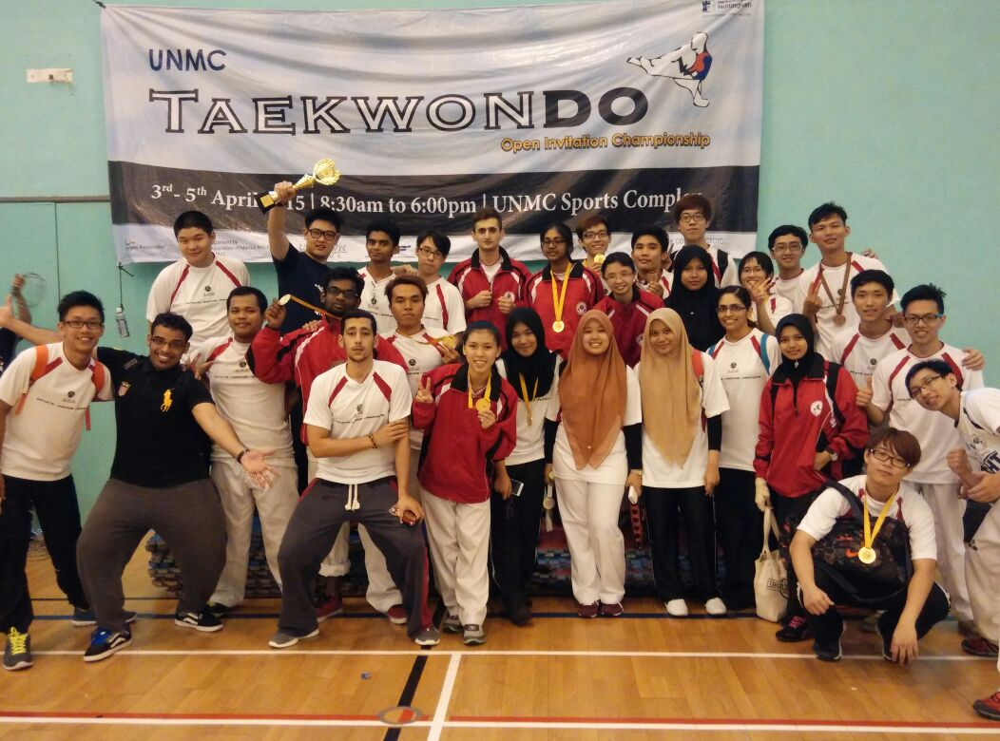
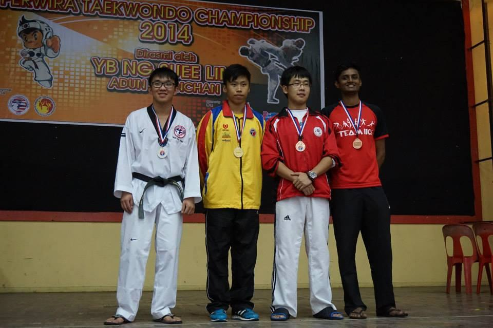

Achieving Greatness
One trophy at a time....

 Asia Pacific University
Asia Pacific UniversityOne trophy at a time....
A fantastic championship at this 10th edition of CK Classic with over 1500 competitors from Afghanistan, Australia, Brunei, China, Hong Kong, India, Indonesia, Iran, Kyrgyzstan, Macau, Malaysia, Singapore, Sri Lanka, Taiwan, Thailand, Uzbekistan. The team from APU comprises 52 participants, 4 team coaches and 6 team managers.the APU team managed to bag 2 Gold medals, 4 Silver medals
APU's Taekwondo Team achieved A runner up position within the 2nd Nilai university invitational Taekwondo championship which was held on 15 july 2016 the championship saw the participation of 200 participants from 24 universities throughout Kuala Lumpur.The team from APU comprises 31 participants, 2 team coaches and 2 team managers. the APU team managed to bag 2 Gold medals, 4 Silver medals and 14 Bronze medals
 APU’s Taekwondo Team achieved astonishing results at the University of Nottingham Malaysia Campus (UNMC) Taekwondo Open Invitation Championship 2015, which was held on Sunday, 5 April 2015. The championship saw participation of 180 participants from 17 universities throughout Malaysia. The team from APU comprises 31 participants, 2 team coaches and 2 team managers. Majority of the members who participated were junior members, who never had the experience of participating in a Taekwondo open championship. The team from APU comprises 31 participants, 2 team coaches and 2 team managers. Majority of the members who participated were junior members, who never had the experience of participating in a Taekwondo open championship. However, all members demonstrated outstanding performance and soaring spirits at the competition, which resulted in the victory of the team. In the Kyorugi (sparring) category, our team bagged 10 Gold, 3 Silver and 3 Bronze medals, and was eventually announced as the Overall Champion, followed by Sunway University College and Universiti Kebangsaan Malaysia (UKM) at the First Runner-Up and Second Runner-Up positions respectively.
 The APU Taekwondo team successfully stood out as the Overall Champion in the Perwira Taekwondo Championship 2014, which was held on the 8th of November 2014 (Saturday) in SRJK (C) Yoke Kuan, Sekinchan. Prior to the competition, the team is always seen practicing tirelessly and consistently at the APU Foyer during their regular training sessions after 6pm. Thus, this achievement is definitely a rewarding experience for the entire team, to recognise their hard work and effort. A total of 10 teams, consisted of 212 participants, participated in the championship, who were from sports clubs and public and private universities and colleges. From APU, we had 40 members who took part in the championship. Despite most of the members being junior members, they performed well in the championship by demonstrating high levels of persistence and determination. With their soaring spirits and awesome performance, the APU team managed to bag 3 Gold medals, 3 Silver medals and 16 Bronze medals, which they eventually emerged as the Overall Champion of the championship.